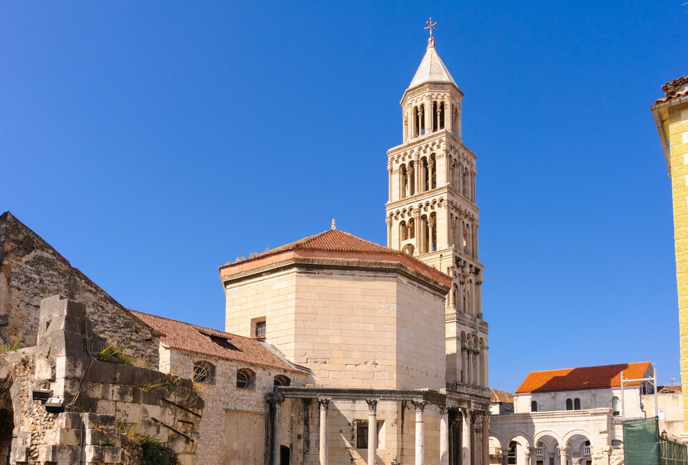

Split
Split je drugi najveći grad u Hrvatskoj i najveći grad Dalmacije.
Najpoznatiji je po Dioklecijanovoj palači koja je pod zaštitom UNESCO-a.
Grad ima poznatu rivu, prekrasne plaže i bogat noćni život.

Split je drugi najveći grad u Hrvatskoj i najveći grad Dalmacije.
Najpoznatiji je po Dioklecijanovoj palači koja je pod zaštitom UNESCO-a.
Grad ima poznatu rivu, prekrasne plaže i bogat noćni život.
